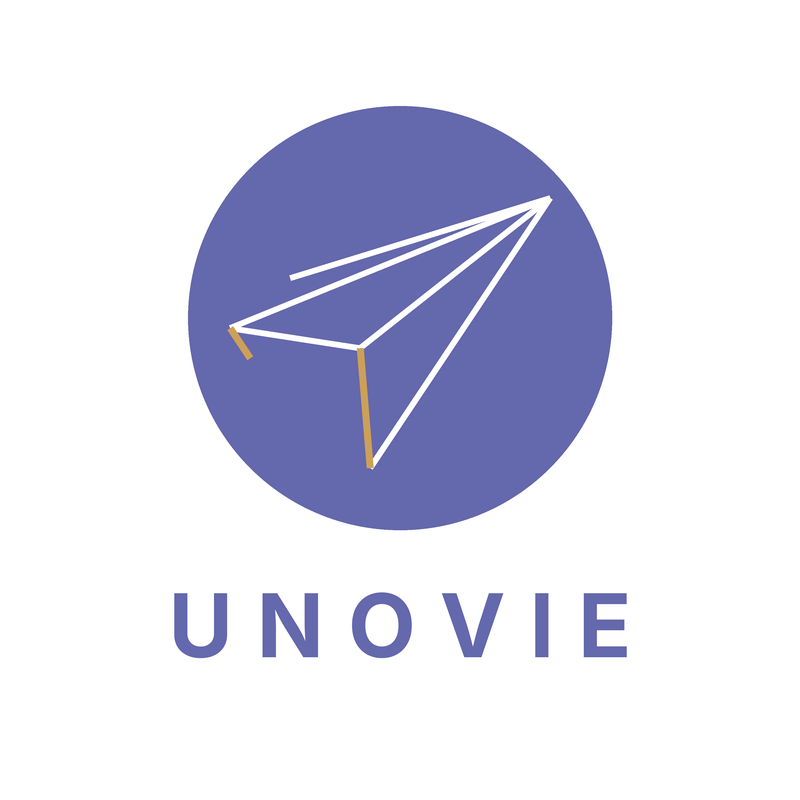
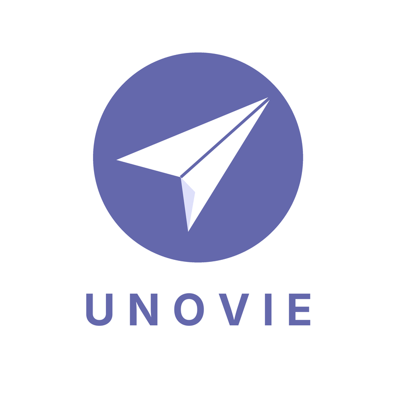
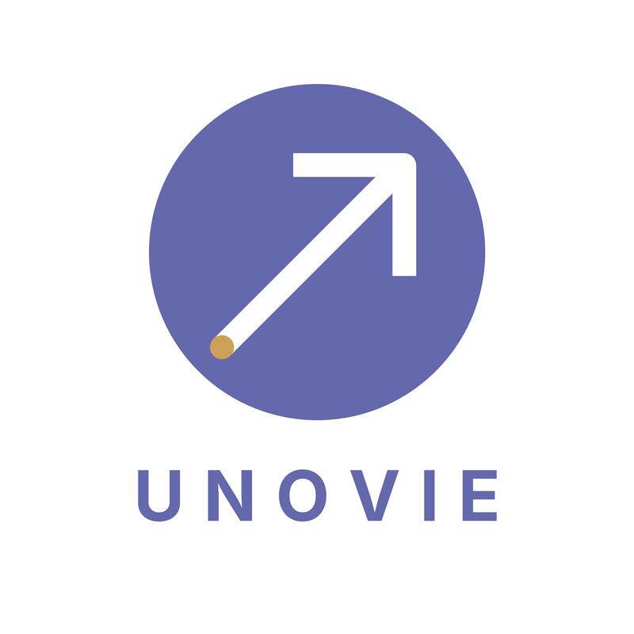

Logo: purple arrow on navy (current pick)
Profile picture
Website header version
Earlier options
A · like the original (white lines)

B · solid flat paper plane

C · bold navigation arrow
D · minimal arrow, gold dot
